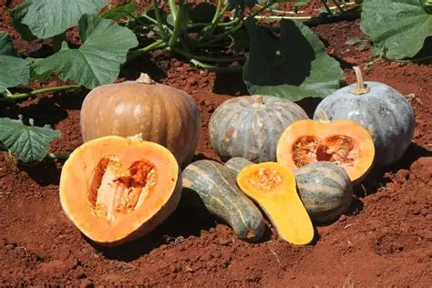
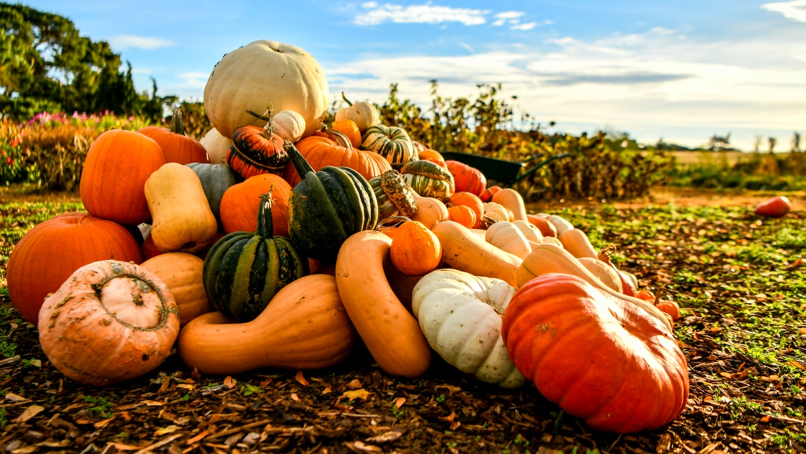
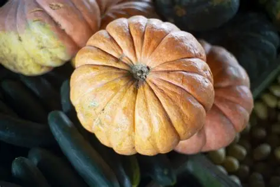
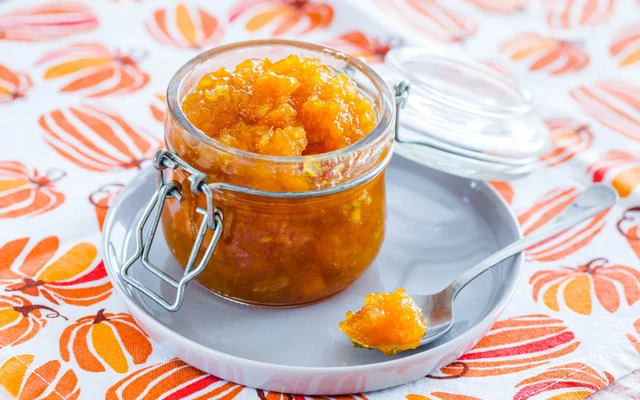
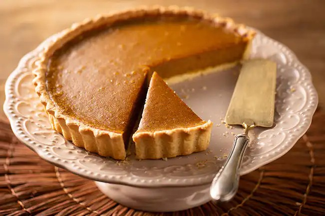

A abóbora, pertencente à família das cucurbitáceas, é um fruto que tem suas raízes nas regiões da América Central e do México.
Ela foi cultivada por civilizações indígenas, como os astecas, maias e pueblos, que a utilizavam não apenas como alimento,
mas também em rituais cerimoniais e na medicina. Acredita-se que a domesticação da abóbora tenha ocorrido há cerca de 8.000 a.C.,
tornando-se uma das culturas agrícolas mais antigas do mundo.
Como cultivar abóboras?
Escolha da Variedade: Selecione o tipo (Cabotiá, Moranga, de Pescoço) de acordo com o espaço disponível
e a finalidade (uso culinário ou doces).
Solo Ideal: Deve ser bem drenado, rico em matéria orgânica e com pH entre 6,0 e 7,0.
Recomenda-se fazer análise de solo e adubação orgânica antes de plantar.
Plantio: Pode ser feito por semeadura direta (2 a 3 sementes por cova) ou pelo transplante de mudas (quando atingirem 10-15 cm),
preferencialmente em horários de sol ameno.
Irrigação: Precisa ser constante, intensificando-se na floração e frutificação.
Pragas: Exige monitoramento contra pulgões e brocas, priorizando métodos orgânicos.
Colheita: Ocorre entre 70 a 120 dias após o plantio, variando conforme a espécie e o clima.
Floração
A floração é um estágio essencial no ciclo de vida da abóbora, pois é durante essa fase que as flores masculinas e femininas se desenvolvem.
As flores masculinas aparecem primeiro, seguidas pelas femininas, que são responsáveis pela produção dos frutos. A polinização,
que ocorre principalmente através de abelhas e outros polinizadores, é fundamental para o sucesso da frutificação.

Principais espécies
Cabotiá (Cucurbita maxima): Também conhecida como abóbora japonesa, possui casca verde-escura e polpa densa e macia. É ideal para pratos salgados, como purês e nhoques.
Moranga (Cucurbita moschata): Popular na culinária brasileira, especialmente no prato "camarão na moranga". Tem casca laranja e polpa doce, sendo muito utilizada em sopas e doces.
Paulista (Cucurbita pepo): Tem formato alongado e casca rajada de verde e creme. É versátil, podendo ser usada em pães, saladas e doces.
Butternut (Cucurbita moschata): Conhecida por sua forma de pera e sabor adocicado, é frequentemente utilizada em sopas e purês.
Abóbora de Pescoço (Cucurbita moschata): Caracteriza-se por seu tamanho grande e formato alongado. É rica em água e ideal para saladas e pratos cozidos.
Abóbora de Cabaça (Lagenaria siceraria): Usada principalmente para fazer utensílios e instrumentos musicais, mas também pode ser consumida.
Abóbora de Halloween (Cucurbita pepo): Tradicionalmente esculpida para o Halloween, é menos utilizada na culinária, mas pode ser consumida em sopas e purês.

Composição nutricional da abóbora
Vitaminas: Rica em vitaminas A e C, que são essenciais para a saúde ocular e fortalecimento do sistema imunológico.
Minerais: Contém potássio, magnésio e ferro, que são importantes para a regulação da pressão arterial e a saúde óssea.
Carbohidratos: A abóbora é uma boa fonte de carboidratos, com aproximadamente 7 gramas por 100g, sendo baixa em calorias.
Fibras: A presença de fibras contribui para a saúde digestiva e a sensação de saciedade, ajudando na perda de peso.
Beta-caroteno: Um carotenoide que se converte em vitamina A no organismo, importante para a saúde ocular e a proteção contra doenças.
Benefícios do consumo da abóbora
Os benefícios do consumo da abóbora incluem a proteção da visão, a perda de peso, a prevenção da diabetes e a manutenção da saúde cardiovascular.
A abóbora é rica em carotenóides, que são antioxidantes que ajudam a proteger a pele e os olhos contra os raios UV e a luz azul. Além disso,
a abóbora é uma boa fonte de fibras, que ajudam na digestão e na perda de peso. A presença de potássio na abóbora também é benéfica para o controle da pressão arterial.

Tabela nutricional de algumas abóboras
Componentes
Abóbora Cabotian
Abóbora Moranga
Energia
48 kcal
29 kcal
Proteínas
1,4 g
0,4 g
Gordura
0,7 g
0,8 g
Carboidratos
10,8 g
6 g
Fibras
2,5 g
1,5 g
Vitamina C
5,1 mg
6,7 mg
Potássio
351 mg
183 mg
Cálcio
8 mg
7 mg
Receitas com abóbora
Sopa de abóbora
Ingredientes (6 porções)
1/2 abóbora moranga pequena (descascada e cortada em cubos grandes)
1 batata média (descascada e cortada)
1/2 cebola picada
1 dente alho pequeno amassado
1 litro de água ou mais
1 cubo de caldo de legumes
Cebolinha verde picada
Sal somente se necessário
Utensílios
Liquidificador
Panela
Prato fundo
Faca
Leiteira
Tábua de corte
Modo de preparo:40min
Em uma panela grande, doure o alho em um fio de óleo e logo acrescente a cebola picada.
Mexa rápido e acrescente a abóbora picada e a batata.
Coloque a água e deixe ferver, após fervura colocar o caldo de legumes e mexer.
Deixe cozinhar com tampa até a abóbora e a batata estarem cozidas.
Desligue o fogo. E Espere amornar um pouco.
Depois despeje tudo no liquidificador e bata até virar creme.
Despeje na panela novamente e cozinhe uns 3 minutos com a cebolinha, acrescente sal se necessário.
Sirva quente, com cubinhos de queijo branco e torradas.
Doce de abóbora

Ingredientes (5 porções)
1 kg de abóbora cozida sem casca e cortada em pedaços médios
2 xícaras (chá) de açúcar
1 canela em pau
3 cravos-da-Índia
ralado fresco Coco ou seco a gosto
Utensílios
Panela
Colher de pau
Colher de sobremesa
Pote hermético
Modo de preparo:40min
Em uma panela grande colocar a abóbora, o açúcar, a canela e os cravos.
Levar para cozinhar em fogo brando com a panela tampada.
Mexa sempre e amasse com uma colher de pau para desmanchar a abóbora.
Quando ela estiver bem cozida, retire a canela e os cravos, e junte o coco.
Deixe apurar mais um pouco e desligue o fogo.
O doce não pode ficar seco, tem que ficar bem úmido.
Torta de abóbora

Ingredientes (10 porções)
1 e 1/4 xícaras de farinha de trigo gelada
1/2 xícara de manteiga gelada (8 colheres de sopa)
água gelada (4 a 7 colheres de sopa)
1 colher (sobremesa) de sal
420 g de abóbora cozida e espremida
1 ovo
3 gemas
1 lata de leite condensado
canela a gosto
Modo de preparo:40min
Misture a farinha, a manteiga, o sal e a água em uma vasilha até formar uma massa uniforme (vá adicionando água aos poucos)
Arrume a massa já em forma de torta em uma forma de fundo falso e reserve.
Misture a abóbora já cozida e espremida com o ovo inteiro, as gemas, o leite condensando e a canela.
A mistura do recheio vai paracer bem líquida, mas é assim mesmo. Despeje tudo na forma, dentro da massa.
Leve ao forno preaquecido a 220º C por 15 minutos.
Reduza a temperatura do forno para 180º C e deixe mais 30 a 35 minutos.
Espere esfriar um pouco antes de levar a geladeira.
Sirva gelada.
Bibliografias
Listologia – A origem da abóbora
Estadão – Afinal, como plantar abóbora?
Modernagriculturefarm – Todos os tipos de abóboras